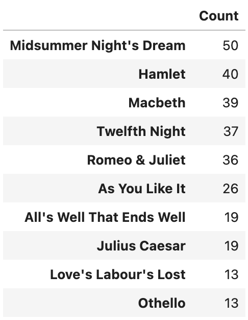
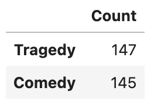

This is an individual project that I worked on during my time at UVA's Master's in Data Science program. This was arguably the most exciting project that I've done there, as it combined my two interests: statistical analysis and theatre.
Link to GitHub repository: Link
To-do's:
Add later
Theatrical performances are an art form that are expressed through rich, live storytelling. But how are those expressions received? What kind of discourse occurs from them? This project analyzes approximately 300 theatre performance reviews using Principle Component Analysis, Topic Models, Word Embeddings (word2vec) and Sentiment Analysis. Through these analyses, insights into theatrical performance reviews are uncovered.
The source data for this analysis was collected from the website https://www.playshakespeare.com/. This website describes itself as 'the best Shakespeare source for plays, news, reviews, and discussion' and contains, amongst other contents, reviews of theatrical performances based on the works of William Shakespeare.
As the website was not web-scraping friendly, the webpages containing the reviews were manually downloaded as HTML files. In total, there were 292 HTML files which were later parsed into more analysis-appropriate formats. The code developed to parse through the source files are stored in the parser.ipynb file. This file, along with the 292 HTML files, are available on the GitHub page for this project.
The distribution of Shakespeare's work that the reviewed performances were based on, along with their genre, are as follows:
 The original works have an unequal distribution, but the genre is equally distributed within the corpus.
Below is a histogram of the word counts of each review, post-parsing:
Not done yet, to be added...